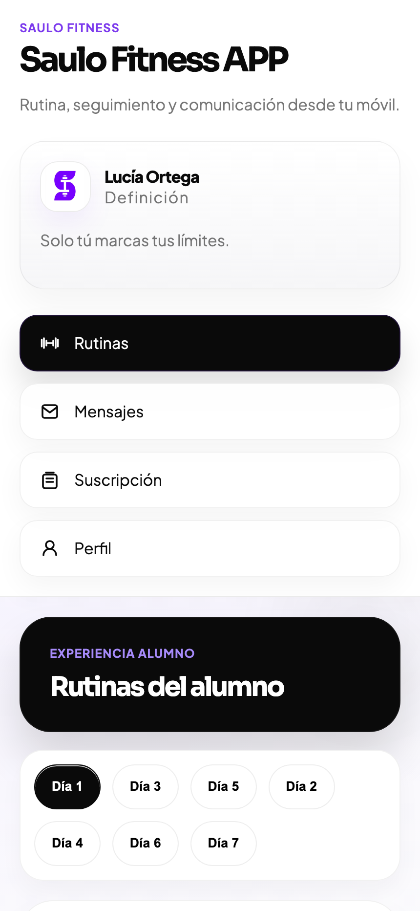

Cada processo parte do seu objetivo, nível e contexto real.
TRANSFORME O SEU FÍSICO COM UM PLANO PERSONALIZADO
Treinamento personalizado · Nutrição · Acompanhamento semanal · Coaching online
Resultados
Mudanças visíveis quando o trabalho é bem estruturado.
A transformação não depende de uma rotina isolada. Depende de uma estrutura sólida, bom acompanhamento e consistência bem conduzida.
Caso 01
Marta Ruiz
Chegou com medo de treinar força, zero constância e a sensação de não se reconhecer no espelho.
Antes
Sem estrutura nem confiança
Treinava de forma irregular e sem medir progresso real.
Depois
Mais forte e mais segura
Recuperou tônus, aprendeu técnica e consolidou hábitos.
Marta passou de evitar a academia a treinar com critério três dias por semana e sustentar hábitos pela primeira vez.
Caso 02
Diego Salas
Vinha de meses desordenados, dor nas costas recorrente e a sensação de estar sempre recomeçando.
Antes
Fadiga e más sensações
Muita irregularidade, pouca mobilidade e relação frustrante com o próprio progresso.
Depois
Postura, energia e controle
Melhorou a composição corporal, ganhou estabilidade e voltou a treinar sem improviso.
Diego deixou de treinar com dor e voltou a sentir segurança em cada sessão.
Saulo Fitness
01 / 03
Treinamentos
Rotinas adaptadas ao seu nível, com execução clara e progresso mensurável.
O trabalho é construído com planejamento personalizado, vídeos de apoio, controle de cargas e ajustes de acordo com a sua evolução real.
O QUE INCLUI
- Plano personalizado conforme objetivo e nível.
- Vídeos explicativos dos exercícios.
- Evolução acompanhada e adaptação contínua.
Saulo Fitness
02 / 03
Coaching online
Um serviço profissional exige avaliação, planejamento e acompanhamento.
O acompanhamento é organizado em etapas claras para manter o foco, ajustar o plano no momento certo e sustentar o progresso.
COMO FUNCIONA
- Avaliação inicial e definição do objetivo.
- Plano personalizado e entrega da rotina.
- Acompanhamento, revisão e ajustes.
Saulo Fitness
03 / 03
Aplicativo móvel
Sua rotina, seus vídeos e seu acompanhamento sempre disponíveis.
A experiência no móvel permite consultar os treinos, acessar vídeos, rever mensagens e levar o processo com você para qualquer lugar.

Como funciona
Um processo claro desde o primeiro contato.
A entrada no programa é organizada de forma simples para começar com ordem e manter o acompanhamento desde o início.
Você pede informação
Compartilha o objetivo e resolvemos as primeiras dúvidas.
É feita a avaliação
Seu ponto de partida é revisto antes de estruturar o trabalho.
Você recebe o plano
Definimos a rotina, a estrutura e o modelo de acompanhamento.
Começa o acompanhamento
O processo segue com revisão, ajustes e contato direto.
Histórias reais
Processos diferentes, a mesma forma de trabalhar.
Passou de evitar a academia a treinar com critério três vezes por semana e sustentar hábitos pela primeira vez.
Deixou de treinar com dor e voltou a sentir segurança em cada sessão, com melhora clara em postura e energia.
Fecho
Se você quer treinar com uma estrutura séria, esta é a conversa certa para começar.
Conte-me o seu objetivo e avaliamos como estruturar um processo pessoal, realista e bem conduzido.